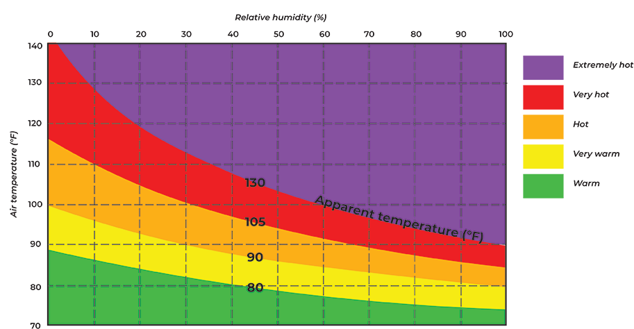
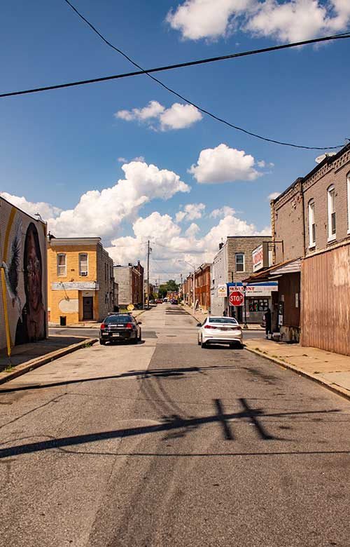
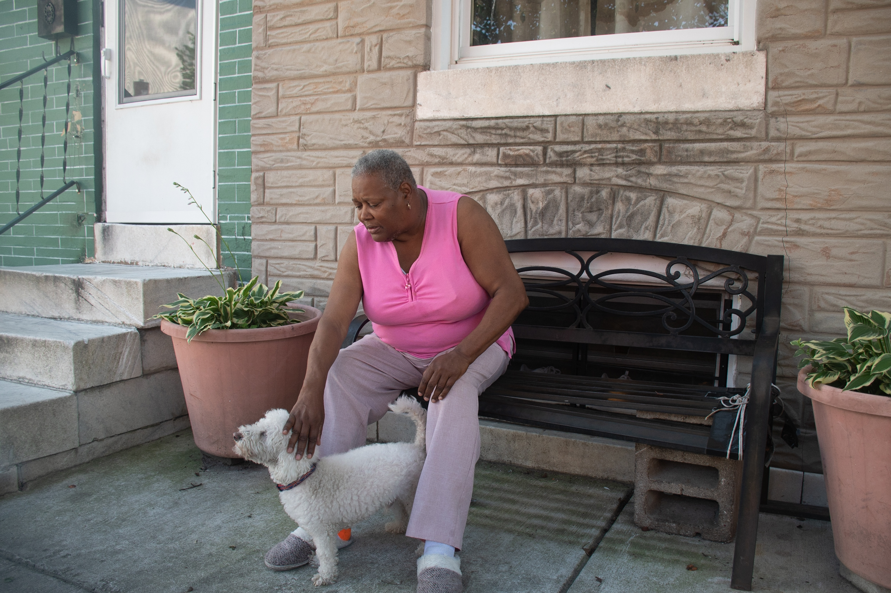

(Top photo by Amina Lampkin | University of Maryland photographer)
Health risks rise with the temperature
STORY BY: IAN ROUND, JAZMIN CONNER, JERMAINE ROWLEY AND JOHN FAIRHALL
Michael Thomas and Alberta Wilkerson stand on the steps outside their home on the 2400 block of East Preston Street in Baltimore. (Photo by Amina Lampkin | University of Maryland photographer)
As the temperature in their rowhouse apartment rose to a humid 96 degrees F during a summer heat wave, Michael Thomas and Alberta Wilkerson sat on their bed, in front of fans, wiping sweat and drinking water, trying to keep their minds off the heat.
Thomas, 61, played solitaire and Candy Crush Saga on the computer and kept an eye on the TV. Despite the heat, Wilkerson had an appetite, so she boiled a hot dog and ate it while she watched “Criminal Minds.”
“I just keep my mind right there,” Wilkerson, 49, said, pointing at the TV. “I just wipe sweat all day.”
The couple decided to stay in their unairconditioned, second-floor home in Broadway East in East Baltimore during the scorching 11-day stretch in July. It was a risky decision.
The heat wave included two days when outdoor temperatures hit 100 degrees and sparked a Code Red heat emergency, which city officials declare when the temperature reaches dangerous levels.
The heat index, which takes into account temperature and humidity, describes how hot the air feels. At 10:30 p.m. on July 18, the heat index in their living quarters reached a high of 116 degrees, according to a sensor they allowed reporters from the University of Maryland’s Howard Center for Investigative Journalism and Capital News Service to place in their home for several weeks. That was 22 degrees hotter than the heat index outdoors.
As heat and humidity increase, it becomes harder for sweat to evaporate and the human body to cool off.
Heat index measures how temperature and humidity feel to the body
Ever wonder why it feels hotter than the thermometer reads? Heat index is a value measuring apparent temperature, how hot it actually feels to the human body. Air temperature and relative humidity are used to calculate the heat index. With little humidity, the temperature the body feels isn’t much different from the air temperature. But as temperatures rise, even small amounts of humidity can pose a threat and increase the likelihood of heat disorders and illnesses
BY AMINA LAMPKIN

**Heat index values were formulated from shady locations with light winds. According to the National Weather Service, direct sunlight can increase the heat index by 15° F.
Source: National Oceanic and Atmospheric Administration
Between them, Thomas and Wilkerson take about 20 medications for ailments that include lung disease and high blood pressure for Thomas, and lung disease, mental illness and heart disease for his wife.
Their problems rank high on the list of those that exposure to high heat and humidity can worsen — sometimes dangerously so. Public health experts warn that danger will only increase as the climate warms.
Heat waves will increase in number and intensity, according to scientists. They are especially perilous because consecutive days with the heat index at 103 degrees or above greatly increase risks for older people, children, pregnant women and anyone with heat-affected chronic disease.
HOW EXTREME HEAT AFFECTS PEOPLE WITH CHRONIC HEALTH CONDITIONS
Extreme heat places considerable strain on the body’s vital organs and systems, making people with chronic health conditions more vulnerable to rising temperatures.
(Motion graphic by Camila Velloso)
Under physical and mental stress from extreme heat, humidity and dehydration, people may struggle to maintain core organs and systems: their cardiovascular system, lungs, kidneys and brain.
The body’s alarm bells begin to ring. The heart pumps faster to cool the body when its sweating mechanism fails and its core temperature soars toward the red zone of 104 degrees and beyond — and likely death without fast medical intervention.
That helps explain why, during the summer in Baltimore, emergency medical calls for dehydration, respiratory distress, kidney disease, diabetes complications, heart attacks and heart failure spiked when the heat index rose above 103 degrees, according to a Howard Center data analysis.
Dr. Matthew Levy, who works in the emergency medicine department at Johns Hopkins Hospital, talks about the impact of heatwaves on the hospital. Through casual and data observations, the hospital finds that it is taking longer to discharge patients home during heatwaves, Levy said. (Photo by Amina Lampkin | University of Maryland photographer)
“Heat affects the body in a number of different ways,” Dr. Matthew J. Levy says, resting on a chair after a “very busy” night in the emergency room of The Johns Hopkins Hospital in East Baltimore, where he has worked for 14 years. It was the morning of July 19, and the outdoor temperature would rise to 98 degrees.
Successive days of high temperatures and humidity make it “harder on the human body to maintain homeostasis,” including normal body temperature, he says. Patients may arrive at the ER with such symptoms as shortness of breath, pain, exhaustion, dizziness, mental confusion and a high temperature. Untangling the causes isn’t always easy.
To understand what’s going on, Levy and other emergency room staff do a thorough assessment. Some medications taken for chronic heart or lung disease, for example, can place people at greater risk for heat illness, he says.
Diuretics used to reduce fluid buildup in the body make it harder to stay hydrated. So do inhalers prescribed to make it easier to breathe when the air is hot, humid and polluted. Beta blocker medications slow the heart rate, diminishing the body’s ability to pump blood to the skin where heat is expelled.
“Exposure to extreme heat has been associated with increased use of alcohol to cope with stress, increases in hospital and emergency room admissions ... and increase in suicide.”
- American Psychiatric Association
Medications may need to be adjusted, and fluids restored. For those with temperatures too high, staff apply ice packs and use other cooling techniques. No one is sent home until they’re stable. Even then, medical staff and social workers may delay discharge if it appears a patient — such as an older person living alone in an unairconditioned house — would be unsafe.
Public health officials in Baltimore emphasize the need to check in on aging relatives and friends during a heat wave. Compared to younger people, the elderly are less able to control their temperature, have weaker immune systems and suffer from more chronic diseases. Cognitive issues, limited mobility and social isolation often add to their vulnerability.
Audrey DeWitt is 67 and suffers from Type 2 diabetes, asthma she says is triggered by seasonal changes, high blood pressure and peripheral vascular disease, which causes fatigue and leg pain so severe she says it makes her feel like she’s “frying in grease.”

Telephone poles and power lines cast the only shadows across treeless block of N. Rose Street in the McElderry Park neighborhood of East Baltimore during a late July heatwave that saw temperatures hit triple digits. (Photo by Justice Georgie | Wide Angle Youth Media)
Her breath becomes short in the heat and humidity, which causes airways in her lungs to become inflamed and constricted. Pollution makes breathing even harder. Ozone, an atmospheric gas, increases during the summer and, according to the Environmental Protection Agency, “is most likely to reach unhealthy levels on hot sunny days in urban environments.”
Air conditioning is an effective tool to tame the harmful effects of extreme heat. DeWitt has two units, one on the first floor near where she sleeps and another upstairs, but they don’t cool the entire house, she says. Despite the units, a sensor placed on the first floor by University of Maryland journalists recorded a heat index of 92 degrees at 6 a.m. on July 20. That was two degrees hotter than the heat index outdoors.
A resident of the McElderry Park neighborhood for about 40 years, she once was very active in the community, mentoring young girls. She taught them to cook and sew, and took them on field trips to restaurants and hotels where they learned etiquette and manners. “I wanted to show them a better way of life,” DeWitt says.
She said her health problems began in 2005, limiting her activities. She blames diabetes and years of on-her-feet manual labor for the nerve damage that she says makes her legs numb and requires her to use a cane to avoid falling. For her asthma, she uses an inhaler twice daily to combat the wheezing, sweating and breathing difficulties that she says are worsened by the humidity.
Some complications of diabetes, including damage to blood vessels, can affect sweat glands, limiting the body’s ability to cool, which can bring on heat exhaustion and heat stroke, according to the U.S. Centers for Disease Control and Prevention.
The cardiovascular system is especially stressed by extreme heat. To counter a rise in body temperature the heart pumps faster, sending more blood to the skin to reduce heat. While that works to cool a body, the resulting sweat also may lower levels of crucial minerals like potassium and sodium. Someone with heart failure may experience a drop in blood pressure, causing dizziness.

Audrey Dewitt, a McElderry Park resident, strokes her dog, Buckie. Although Dewitt has asthma, Buckie doesn’t shed, making it easier to simultaneously live with asthma and a pet. (Photo by Amina Lampkin | University of Maryland photographer)
Young children are also vulnerable in the heat, the American Academy of Pediatrics warns. The problems they may experience on very hot days track many of those of adults — among them dehydration, heat exhaustion, cramps, heat stroke, nausea and fever. And they may not recognize the warning signs.
In the hottest areas in Baltimore, low-income patients have higher rates of chronic disease affected by heat
In Baltimore, the urban heat island effect means some parts of the city are hotter than others. And in the hottest parts of the city, it’s an unfortunate truth that low-income people have higher rates of chronic health conditions affected by heat, when compared with low-income people who live in cooler parts of the city.
The first (left) map shows afternoon temperature variations by ZIP code in August 2018, as measured by climate researchers. The right (second) map shows the prevalence of selected health conditions among Medicaid patients who were admitted to the hospital between 2013 and 2018.
BY ADAM MARTON
Temperature by ZIP Code
Click an area for average afternoon temperature on August 28, 2018.
Health conditions by ZIP Code
Select a health condition from dropdown to change the map
Sources: Urban heat island assesssment of Baltimore on August 29, 2018 by researchers at Portland State University in Oregon and the Science Museum of Virginia. Hospital admissions data from the Maryland Health Services Cost Review Commission. Data analysis by Roxanne Ready, Sean Mussenden and Jake Gluck.
Asthma rates in low-income areas like McElderry Park and Broadway East are higher than in more affluent areas. Stephanie Pingley, 31, who lives in McElderry Park, Baltimore’s hottest neighborhood, has three young sons with the disease. Two of the boys live with her full time, along with a niece who doesn’t have asthma.
They regularly see a doctor and take medication as needed. Her youngest son, who’s 7, has the worst case. Now he keeps the disease under control with an albuterol inhaler that relaxes muscles in his airways and increases the flow of air to his lungs, and a second inhaler that tamps down inflammation.
“If we ever move from here, I want a house with central air.”
- Stephanie Pingley, McElderry Park resident
Air conditioning helps keep asthma under control, and Pingley says the family has one unit upstairs in the master bedroom and another in a first-floor kitchen window protected by bars to keep out intruders. Her niece and one of her sons share a bedroom with a powerful fan but no AC.
Pingley says that room can get as “hot as Hades,” which is reflected in readings of a sensor placed there. The heat index in that room climbed as high as 118 degrees and never dropped below 88 degrees over a seven-day stretch.
“If we ever move from here,” she says, “I want a house with central air.”
Stephanie Pingley and her family sit in front of the Amazing Port Street Garden sign at Amazing Grace Evangelical Lutheran Church. (Photo by Amina Lampkin | University of Maryland photographer)
The threat of climate change is driving more medical research into the problems extreme heat cause, not just physical maladies but also psychological ones, such as stress and anxiety.
“Exposure to extreme heat,” the American Psychiatric Association reports, “has been associated with increased use of alcohol to cope with stress, increases in hospital and emergency room admissions for people with mental health or psychiatric conditions, and increase in suicide.”
In Baltimore, the rate of emergency medical calls for psychiatric disorders and drug and alcohol overdoses increased dramatically when the heat index hit 103 degrees, the Howard Center data analysis found.
Even fetuses can be harmed by extreme heat, as can pregnant mothers-to-be, a recent article by the American Heart Association explained.
Heat and the body’s response to it can stress the already stressed system of a pregnant woman. And when a pregnant woman’s temperature rises above 102.2 degrees, she’s at greater risk for heat exhaustion, heat stroke and dehydration — conditions that may result in dizziness and falls.
A study published this year in the Journal of the American Heart Association suggested higher temperatures from global climate change may increase the number of infants born with heart defects between 2025 and 2035. Researchers looked at the association between congenital heart defects and maternal heat exposure during early pregnancy in spring and summer, then factored in anticipated increases in the number of very hot days.
The American Lung Association announced in June plans for a study that will follow young adults over six years to examine how lung function changes over time. Additionally, researchers hope to determine whether factors such as air pollution result in lower lung function.